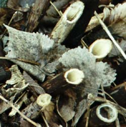

Saturday, May 29, 2004
Earthly Delights
Spring Wildflowers, Charles River, Waltham, Massachusetts

Arrowhead

Buttercup
Violet

Cow Vetch

Dandelion

English Plantain
(?) Foamflower ... No ! Laurel !

Grape Hyacinth

Ground Ivy

Horsetails

Little Starwort

Purple Deadnettle

Spiderwort
Star of Bethlehem

Swallowwort

White Campion

Wild Madder

Yellow Iris
Yellow Rocket
Arrowhead
Buttercup
Violet
Cow Vetch
Dandelion
English Plantain
(?) Foamflower ... No ! Laurel !
Grape Hyacinth
Ground Ivy
Horsetails
Little Starwort
Purple Deadnettle
Spiderwort
Star of Bethlehem
Swallowwort
White Campion
Wild Madder
Yellow Iris
Yellow Rocket
Friday, May 28, 2004
In Praise Of Little Words
I like the idea of baseball more than I do the game itself. I admire how it differs from the sports that are modeled on war and messy battlefield face-offs. It's more like a board game -- Parcheesi or Sorry, to cite two favorite childhood examples -- where the players propel counters around a track in a race to arrive home. Home. The cozy, safe, family-invested hearth. I loved those board games. The bright little game counters seemed like little people, and the home squares their dwellings. It was more like playing house than playing war. The competition seemed almost incidental.
When I opened DeLillo's Underworld some years ago and noticed the first chapter was about baseball, my heart sunk. "Baseball is so BORING," I thought. Within a paragraph, I was hooked, and rushed about for days raving about how I'd just read the best thing I'd ever read, maybe the best thing ever written. Maybe baseball wasn't so boring after all.
No, it is. But maybe that's one of its virtues. It has its own clock. One must adopt its clock, go with its clock, inning by inning. All nine or maybe more of them. Or, further subdividing, half inning by half inning, as in the top of the fifth or the bottom of the ninth. Eighteen, then. As in holes of golf. Baseball's more like golf than like football, except golf's geometry is linear and golf is really boring. The avatar of boredom.
But what I mostly admire about baseball are the words. The curt, punchy little anglo-saxonisms. This, I'll admit, is odd coming from someone who, just yesterday thought, listening to Arvo Part's Summa, Maybe I should memorize the Nicene Creed in Latin ! Or the woman who once wrote a long series of poems based on a list of the most exotic words she could fine in the OED Etymology Dictionary.
Baseball says:
The bag. The mound. Bat, ball, bunt, strike, fly.
But I especially like "The Bag" and "The Mound."
And, of those two, "The Bag" is my favorite. DK think's it's the hard "G." That could be. We won't explore the Freudian angle.
Last Easter my dear mother, looking up from dessert, said:
This is nice pie.
I have spent the past few months trying to figure out what about that phrase is so delicious, so sweetly funny, so pleasantly absurd, so ridiculously endearing.
The word "pie," like the word "spleen," has always seemed to me intrinsically humorous. I've always liked the bit of invective "Shut your pie hole," combining as it does two nifty monosyllables -- pie and hole -- into a totally satisfying and descriptive bit of slang. Cakehole's a little more genteel. Pie, ever so slightly vulgar. Cake, refined. Hole -- well, res ipse loquitur. As one might expect, I also love "pound down" for "eat."
Pound that down your piehole !
"This is," replies my mother, sweetly, "nice pie."
Thursday, May 27, 2004
Glop-Ed
Today Joan Vennochi, at the end of one of her signature Globe op-ed pieces -- turgidly unreadable prose, phobic avoidance of taking any editorial stand beyond the banal middle-of-the-road, and gratuitous Kerry bashing -- achieves a new rhetorical low in her attempt to smear the Democratic presidential hopeful. Her topic is a press luncheon hosted by Ted Kennedy. After portraying the Kennedy dynasty in a "Whatever happened to Baby Jane" light,
Everything looks the same, but everything is different. A beauteous but creepy movie lot is all that is left of Camelot by the sea.
and making a cheap shop at Kennedy's weight,
...I did not press the Massachusetts senior senator up against the buffet table to interrogate him further...
and expressing her usual horror (be nice ! be NICE !) at the very idea of someone taking a principled stand
On the Senate floor, Kennedy said, "Shamefully, we now learn that Saddam's torture chambers reopened under new management -- US management." Such rhetoric is inflammatory, to say the least.
she concludes
It is delicate politics for Kerry. How do you embrace what is left of the Kennedy magic but escape the Kennedy ghosts from Camelot and Chappaquiddick?
I bet even Karl Rove hadn't thought of pinning Chappaquiddick on John Kerry.
Monday, May 24, 2004
Transcendental Etude V

She was idling at a traffic light on her way home from work. She'd never quite managed to wake up that day, and bedtime was fast approaching. The brief alertness that had followed her third cup of coffee had long since faded, and her brain was idling at an even lower rpm than her Honda. NPR was droning on, washing over her like the rain that had fallen intermittantly all afternoon. Dull, dull, dull. What was the Buddhist phrase ? Sloth and torpor. The hindrance of the hour.
Something, suddenly, caught her eye -- a bumper sticker, plastered below the window of the minivan in front of her. One of those iconic yellow smiley faces -- the perfect circle, the two blank eyes, the broad, lipless grin -- was ogling her through her windshield. Beside the message:
Smile ! God loves you.
She cringed. Was this the wife of I (heart) Jesus man driving the kids to evening Bible study ? She'd had a strange dream the night before: on the high and grimy window sill above her bathtub were two pure white china statues, Christ and Mary, and three white votive candles.
She'd related the dream to her husband.
"I don't know, PT, are you sure you're not going to become born again ?"
"No, of course not."
"You didn't say no quickly enough."
"No ! I can't stand that pentecostal stuff."
"Then some kind of Catholic."
"No. I couldn't be Catholic. I hate their ideas about sex and gender."
"A Jew, then," he persisted, invoking his own never-firmly-embraced and now-long-abandoned tradition.
"Well," she ventured, finding herself in safely hypothetical theological terrain, "What would you do if I did become a Jew ?"
"I'd be weirded out," he replied, chuckling and walking away.
The light changed, and she followed the grinning icon -- :) -- through the intersection. "God loves you" was one of those unassailable theological givens that just did not compute. Never mind the byzantine algebra of "Jesus died for your sins." What was she doing in church anyway when something so basic seemed incomprehensible ?
Was she the apple of His eye ?
Did she live beneath the shadow of His wing ?

She liked the psalmist's metaphors. Apple of His eye: Love as gaze, as distance, as look-but-don't-touch. Not, significantly, apple of His mouth, which, like most terrestrial "love," would simply be a version of hunger. And wing -- hadn't she seen a goose and her brood on the riverbank just days ago, a half dozen yellow downy gosling jostling for space quite literally under her wings ? A different type of terrestrial love. Maternal, altruistic. But still biological. But the psalm reads shadow of His wing -- again, love-at-a-distance.
But, it suddenly struck her, isn't "love" itself, as a characteristic of God, a metaphor ?
And, if so, for what ? She re-read the text.
God loves you.
Metaphor, or, perhaps, simply a part of speech, a bit of grammar. An ambiguous copulative.
The minvan took a right at the next light. She turned left, envisioning a line of purely apophatic theological bumperstickers. Like the one that did and did not grace her own theological bumper.
Sunday, May 23, 2004
The World's Largest Female ... Republican ?
When I read that Japanese Knotweed is the "world's largest female," I felt a proud frisson of sisterhood. Sure, I also read about its aggressive and malignant invasiveness, but still, passing the vast and burgeoning banks of it near the river, I've felt a secret feminist kinship.
When I first began doing the river walk back last fall I admired the ubiquitously pendant golden seeds.

They're pure decoration. All the reproductive action goes on rhizomatously, subversively, underground. When the grim municipal reaper came through late fall and crewcut the luxuriant pathside, he did not spare the knotweed. Its resemblance to bamboo -- its hollow, segmented stems -- became quite apparant.


When the spring floods came, thickly packed flats of knotweed stems logjammed the inlets.

And, when the waters receded, up rushed the season's new crop of knotweed.
Then more.
Then more.
Then more.
I have been admiring the thick, green, red-specked stems, and the crimson veined new leaves, and note that, in the space of one month, many of the plants have grown taller than me. One helluva powerful woman, that knotweed. You go girl !
But Joseph Duemer , whose yard is apparantly menaced by the stuff, politicizes it differently:
... (knotweed) can grow to eight feet tall & is pollinated by flies because the flowers—small, white, sticky clusters—smell like death & defecation. Knotweed is the Bush presidency of invasive species: utterly worthless but inexorable, without even aesthetic value. ...
He's right, of course. I admit it. Knotweed plays havoc with the landscape, overwhelms less assertive species, muscles in everywhere, stinks, encroaches, consumes, overwhelms, pushes itself blindly across the planet playing out its imperial agenda of domination -- much like the non-floral Bush that's doing its political death and defecation thing in the White House.
OK, then. Knotweed, like W. is worthless and inexorable.
But maybe, unlike the president, just a tiny bit beautiful ?